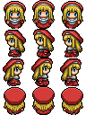
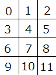
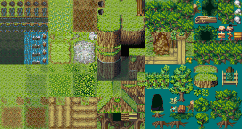

はじめに
まずは下のボタンをクリックして、Atlas.jsをダウンロードしてください。DownLoad
ダウンロードしたAtlas.jsをそのライブラリーを利用する、htmlファイルと
同じ階層にし、下記のようにAtlas.jsをインクルードします。
<html> <head> <script type="text/javascript" src="Atlas.js"></script> </head> <body> </body> </html>つぎに、body要素の中にゲーム画面にしたいcanvasをid付きで下記のように記述します。
<body> <canvas id="Atlas"></canvas> </body>なお、canvasとは、何か知りたい人は下記のサイトを訪問してみてください。 http://www.html5.jp/canvas/index.html
最後に,body要素の中にJavaScriptの記述を書いて、
自分のオリジナルゲームを作りましょう
<canvas id="Atlas"></canvas> <script> <!--ここに処理をかく--> </script> </body>そして、canvas要素のidが上のように、Atlasだったとします。
そのとき、
Atlas();
var game = new App('Atlas');
ある変数にAppをインスタンスする場合、うえのように、引数として、
canvasのid名である、Atlasを指定します。
こうすることで、このライブラリが提供する様々な機能を変数gameを
通して使うことができるようになります。
各種設定
ゲームをループさせる前の初期設定のgameのメソッドを紹介したいと思います
game.load("hero.png","bgm.mp3");
/*
ゲームで使用する素材をロードします
*/
game.load(["hero.png","hero"],["bgm.mp3","bgm"]);
/*
ゲームで使用する素材に名前を付けることもできます
*/
game.centerize();
/*
ゲーム画面をブラウザ画面の中心に配置します。
*/
game.setQuality(width,height);
/*
ゲーム画面の縦横の解像度を設定します。
*/
game.setSize(width,height);
/*
ゲーム画面の縦横のサイズを設定します。
*/
game.fps = 30;
/*
ゲームのfpsを30に設定します。
*/
game.setColor(color);
/*
ゲームの背景色を設定します
*/
game.setImage(./path/to/image);
/*
ゲームの背景画像を設定します
*/
game.addChild(child);
/*
SpriteクラスやShapeクラス、Groupクラス、Textクラスのインスタンスをゲームに追加します。
これをしなければそれぞれのインスタンスは描画されません。
*/
ループ処理、シーン登録
次にゲームの初期処理、ロード中処理、ループ処理について説明したいと思います。
ゲームのループ処理
game.enterFrame = function(){/*処理*/};
Atlas.jsでは次のようにゲームをスタートさせます
Atlas();
window.onload = function(){
var game = new App('Atlas');
game.load("chara.png");
var sprite = new Sprite("chara.png",32,32);
game.addChild(sprite);
game.enterFrame = function(){sprite.x++;};
game.start();//これを書かないとゲームが動かない
};
シーン登録
Atlas.jsでは次のようにローディングシーンを設定したり、シーンを切り替えたりすることができます
/*ローディングシーンの設定*/
var scene = new Scene();
scene.setImage("image");
var text = new Text("ローディングシーンだよ","white",30);
text.setPosition(50,50);
scene.addChild(text);
game.loadingScene(scene);
/*シーンの切り替え*/
var scene = new Scene();
scene.setColor("blue");
var sprite = new Sprite("image.png",32,32);
sprite.enterFrame = function(){this.x++};
scene.addChild(sprite);
game.pushScene(scene);
スプライト
スプライトとは画面内で画像を操作できるオブジェクトのことです
 右のように32(横）*32(縦）pxの3*4等分の画像をスプライトとして使用する場合素材 シアンのゆりかご
game.load("./images/chara2.png");
var chara = new Sprite("./images/chara2.png",32,32);
また、次のように画像にあらかじめ名前を付けてスプライトを生成することもできます
game.load("./images/chara2.png");
game.naming(["./images/chara2.png","chara2"]);
var chara = new Sprite("chara2",32,32);
スプライトは初期値として以下のようなプロパティが設定されています
sprite.x = 0;//x座標 sprite.y = 0;//y座標 sprite.rot = 0;//回転量 sprite.frame = 0;//frame番号
右図
スプライト番号と、画像の関係
たとえば、sprite.frame = 3とすれば描画の際に"3"と表示されます。
そして、以下のようなメソッドが設定されています
sprite.within(anotherSprite,range);
/*
他のスプライトと、数値を引数として、他のスプライトから半径range以内であれば
true,範囲外であればfalseを返す。
(Shapeオブジェクト共通)
*/
sprite.intersect(x,y);
/*
スプライトが座標(x,y)に接していればtrue、接していなければfalseを返す
(Shapeオブジェクト共通)
*/
sprite.scale(5,2);
/*
この場合は、スプライトを横に５倍、縦に２倍拡大する
(Mapオブジェクト、Shapeオブジェクト共通)
*/
sprite.setPosition(100,45);
/*
この場合は、スプライトを(100,45)の地点に移動させる
(Shapeオブジェクト、Mapオブジェクト、Textオブジェクト共通)
*/
sprite.getRand(10,100);
(Shapeオブジェクト、Mapオブジェクト、Textオブジェクト共通)
/*
この場合は、10から100までのランダムな数を返す
*/
sprite.getImage("./path/to/image",32,32);
/*
スプライトを新たな32*32のスプライト画像に置き換えます
（Mapオブジェクト共通）
*/
sprite.getImage("./path/to/image");
/*
スプライトをもとのスプライトの切り取りサイズを保ったまま、新たな
スプライト画像に置き換えます
（Mapオブジェクト共通）
*/
sprite.setSpriteSize(32,32);
/*
スプライトの切り取りサイズを32*32に変更します
*/
sprite.visible = false;
(Shapeオブジェクト、Mapオブジェクト、Textオブジェクト共通)
/*
スプライトを非表示にします
*/
sprite.alpha = 0.5;
(Shapeオブジェクト、Mapオブジェクト、Textオブジェクト共通)
/*
スプライトの透明度を50%にします
*/
sprite.remove();
(Shapeオブジェクト、Mapオブジェクト、Textオブジェクト共通)
/*
スプライトを削除します
*/
sprite.animate([0,1,2],5,100);
/*
スプライトを100フレーム間、5フレームで0番目、1番目、2番目、0番目
という順に画像を切り替えていきます。
*/
sprite.moveTo(100,150,30);
/*
スプライトを30フレームで(100,150)の地点に移動させます。
*/
sprite.moveBy(30,40,50);
/*
スプライトを50フレームで現在の自分の位置から(30,40)離れた位置に移動させます
*/
sprite.rotateBy(Math.PI,30);
/*
スプライトを30フレームで現在の角度からプラス180度回転させます。
*/
sprite.scaleBy(2,3,40);
/*
スプライトを40フレームで現在の大きさから幅を2倍、高さを3倍に変更します
*/
sprite.and();
/*
このようにつかいます。
sprite.moveTo(100,150,30).animate([0,1,2],5);
(100,150)の地点に移動しつつ、スプライトをアニメーションさせる
という意味になります。
*/
sprite.loop();
/*
このようにつかいます。
sprite.moveBy(50,50,30).moveBy(-50,-50,30).loop();
まず、(50,50)離れた位置にスプライトを移動させて、そのあと
(-50,-50)離れた位置にスプライトを移動させることを
繰り返すといういみになります。
*/
サウンド機能 各クラス共通
sprite.getSound("./path/to/sound");
sprite.soundClonePlay();/*多重再生の場合に使用*/
sprite.soundLoopPlay();/*ループ再生の場合に使用*/
sprite.soundReplay();/*最初から再生する場合に使用*/
sprite.soundStop();/*サウンドを停止したい時使用*/
sprite.soundPlay();/*再生に使用*/
sprite.soundPause();/*サウンドの一時停止に使用*/
sprite.soundGetCount();/*サウンドの現在の再生時間の取得*/
sprite.soundSetCount();/*サウンドの再生時間の指定*/
sprite.soundGetVolume();/*ボリュームの取得*/
sprite.soundSetVolume();/*ボリュームの設定*/
sprite.soundGetAlltime();/*サウンドの全再生時間の取得*/
sprite.soundIsPlaying();/*サウンドが現在流れているかを取得*/
テキスト、図形
テキスト
画面内にテキストを表示するためのTextクラスが用意されています
引数は左から、表示する文字、色、サイズ、文字種です
色、サイズ、文字種を指定しない場合デフォルトで
白,10pt,Meiryoとなります
使用例
var text = new Text("われわれは宇宙人だ","red",20,"Meiryo");
また、次のように<br>を文字列に挟めば途中で改行させることもできます
var text = new Text("われわれは宇宙人だ<br>よろしくね","red",20,"Meiryo");
Textクラスのメソッド及び、プロパティ
text.setSize(15);
//テキストのサイズを変更します
text.setFont("Meiryo");
//テキストの文字種を変更します
図形
Atlasでは円と四角形、二つの図形を描画したり動かしたりできます
使用例
var circle = new Shape.Circle("red",15);
/*円の場合の引数、色、半径*/
var box = new Shape.Box("white",20,10);
/*四角形の場合の引数、色、横幅、縦幅*/
イベントリスナー
Atlas.jsではGroupオブジェクト以外のすべてのオブジェクトで
イベントリスナーが扱えます
それぞれ、touchStart
touchMove
touchEnd
keyDown
keyUp
です。
touchStartはゲーム画面ないがクリック、及び、タッチされた時に呼び出される関数です。
touchMoveはゲーム画面内で、マウスが動いたとき、及び触れている指が動いているときに呼び出される関数です
touchEndはゲーム画面内でクリックが終了したとき、及び指が離れたとき呼び出される関数です。
keyDownはキーが押されたときに呼び出される関数です。
keyUpはキーが離されたときに呼び出される関数です
例)Heroオブジェクトをタッチした位置に移動させる
Hero = Atlas.createClass(Atlas.Sprite,{
initialize:function(){
this.inherit("hero",64,64);
this.x = 250;
this.y = 250;
},
touchStart:function(pos){
this.setPosition(pos.x,pos.y);
}
});
例)Heroオブジェクトを十時キーを押した方向に動かす
Hero = Atlas.createClass(Atlas.Sprite,{
initialize:function(){
this.inherit("hero",64,64);
this.x = 250;
this.y = 250;
},
keyDown:function(key){
if(key.down)
this.y+=5;
if(key.right)
this.x+=5;
if(key.up)
this.y-=5;
if(key.left)
this.x-=5;
}
});
マップ
Atlas.jsのマップ機能を使ってみましょう例
First Seed Materialさん 改造マップチップセットの素材です
上のように一つのスプライトが16(横）*16(縦）pxの30*16等分のマップを例にとります。
window.onload = function(){
Atlas();
var game = new App("game");
var map = new Map("./images/map.png", 16, 16);
game.setSize(256, 256);
game.setQuality(256, 256);
map.drawData = [
[0, 0, 0, 0, 0, 0, 0, 0, 0, 0, 0, 0, 0, 0, 0, 0],
[0, 0, 0, 0, 0, 0, 0, 0, 0, 0, 0, 0, 0, 0, 0, 0],
[0, 8, 8, 8, 8, 8, 8, 8, 8, 8, 8, 8, 8, 8, 0, 0],
[0, 8, 8, 8, 8, 8, 8, 8, 8, 8, 8, 8, 8, 8, 8, 0],
[0, 8, 8, 8, 8, 8, 8, 8, 8, 8, 8, 8, 8, 8, 8, 0],
[0, 8, 8, 8, 8, 8, 8, 8, 8, 8, 8, 8, 8, 8, 8, 0],
[0, 8, 8, 8, 8, 8, 8, 8, 8, 8, 8, 8, 8, 8, 8, 0],
[0, 8, 8, 8, 8, 8, 8, 8, 8, 8, 8, 8, 8, 8, 8, 0],
[0, 8, 8, 8, 8, 8, 8, 8, 8, 8, 8, 8, 8, 8, 8, 0],
[0, 8, 8, 8, 8, 8, 8, 8, 8, 8, 8, 8, 8, 8, 8, 0],
[0, 8, 8, 8, 8, 8, 8, 8, 8, 8, 8, 8, 8, 8, 8, 0],
[0, 8, 8, 8, 8, 8, 8, 8, 8, 8, 8, 8, 8, 8, 0, 0],
[0, 8, 8, 8, 8, 8, 0, 0, 0, 0, 0, 0, 0, 0, 0, 0],
[0, 8, 8, 8, 8, 8, 0, 0, 0, 0, 0, 0, 0, 0, 0, 0],
[0, 8, 8, 8, 8, 8, 0, 0, 0, 0, 0, 0, 0, 0, 0, 0],
[0, 8, 8, 8, 8, 8, 0, 0, 0, 0, 0, 0, 0, 0, 0, 0]
];
game.addChild(map);
game.start();
}
また、次のようにマップにコリジョンデータを設定し、
intersect関数で、ある指定された座標がマップの1の位置にあるか0の位置にあるかで
それぞれ、true,falseを返す仕組みも提供されています
window.onload = function(){
Atlas();
var game = new App("game");
var map = new Map("./images/map.png", 16, 16);
game.setSize(256, 256);
game.setQuality(256, 256);
map.drawData = [
[0, 0, 0, 0, 0, 0, 0, 0, 0, 0, 0, 0, 0, 0, 0, 0],
[0, 0, 0, 0, 0, 0, 0, 0, 0, 0, 0, 0, 0, 0, 0, 0],
[0, 8, 8, 8, 8, 8, 8, 8, 8, 8, 8, 8, 8, 8, 0, 0],
[0, 8, 8, 8, 8, 8, 8, 8, 8, 8, 8, 8, 8, 8, 8, 0],
[0, 8, 8, 8, 8, 8, 8, 8, 8, 8, 8, 8, 8, 8, 8, 0],
[0, 8, 8, 8, 8, 8, 8, 8, 8, 8, 8, 8, 8, 8, 8, 0],
[0, 8, 8, 8, 8, 8, 8, 8, 8, 8, 8, 8, 8, 8, 8, 0],
[0, 8, 8, 8, 8, 8, 8, 8, 8, 8, 8, 8, 8, 8, 8, 0],
[0, 8, 8, 8, 8, 8, 8, 8, 8, 8, 8, 8, 8, 8, 8, 0],
[0, 8, 8, 8, 8, 8, 8, 8, 8, 8, 8, 8, 8, 8, 8, 0],
[0, 8, 8, 8, 8, 8, 8, 8, 8, 8, 8, 8, 8, 8, 8, 0],
[0, 8, 8, 8, 8, 8, 8, 8, 8, 8, 8, 8, 8, 8, 0, 0],
[0, 8, 8, 8, 8, 8, 0, 0, 0, 0, 0, 0, 0, 0, 0, 0],
[0, 8, 8, 8, 8, 8, 0, 0, 0, 0, 0, 0, 0, 0, 0, 0],
[0, 8, 8, 8, 8, 8, 0, 0, 0, 0, 0, 0, 0, 0, 0, 0],
[0, 8, 8, 8, 8, 8, 0, 0, 0, 0, 0, 0, 0, 0, 0, 0]
];
map.hitData = [
[1, 1, 1, 1, 1, 1, 1, 1, 1, 1, 1, 1, 1, 1, 1, 1],
[1, 1, 1, 1, 1, 1, 1, 1, 1, 1, 1, 1, 1, 1, 1, 1],
[1, 0, 0, 0, 0, 0, 0, 0, 0, 0, 0, 0, 0, 0, 1, 1],
[1, 0, 0, 0, 0, 0, 0, 0, 0, 0, 0, 0, 0, 0, 0, 1],
[1, 0, 0, 0, 0, 0, 0, 0, 0, 0, 0, 0, 0, 0, 0, 1],
[1, 0, 0, 0, 0, 0, 0, 0, 0, 0, 0, 0, 0, 0, 0, 1],
[1, 0, 0, 0, 0, 0, 0, 0, 0, 0, 0, 0, 0, 0, 0, 1],
[1, 0, 0, 0, 0, 0, 0, 0, 0, 0, 0, 0, 0, 0, 0, 1],
[1, 0, 0, 0, 0, 0, 0, 0, 0, 0, 0, 0, 0, 0, 0, 1],
[1, 0, 0, 0, 0, 0, 0, 0, 0, 0, 0, 0, 0, 0, 0, 1],
[1, 0, 0, 0, 0, 0, 0, 0, 0, 0, 0, 0, 0, 0, 0, 1],
[1, 0, 0, 0, 0, 0, 0, 0, 0, 0, 0, 0, 0, 0, 1, 1],
[1, 0, 0, 0, 0, 0, 1, 1, 1, 1, 1, 1, 1, 1, 1, 1],
[1, 0, 0, 0, 0, 0, 1, 1, 1, 1, 1, 1, 1, 1, 1, 1],
[1, 0, 0, 0, 0, 0, 1, 1, 1, 1, 1, 1, 1, 1, 1, 1],
[1, 0, 0, 0, 0, 0, 1, 1, 1, 1, 1, 1, 1, 1, 1, 1]
];
game.addChild(map);
map.touchStart = function(pos){
if(map.intersect(pos.x,pos.y))
alert("当たっています");
};
game.start();
}
クラス
さらに、Atlas.jsにはクラスを継承し、サブクラスを作るメソッドが用意されています
Atlas.createClassの引数、（継承したいクラス、追加したいメソッドの連想配列）
この際に、連想配列の中にサブクラスのコンストラクタとなる、 initializeをメソッドとして加える必要があります
例(Enemyクラスの生成)
(function(){
Enemy = Atlas.createClass(Atlas.Sprite,{
initialize : function(image,numX,numY){
this.inherit(image,numX,numY);
this.sx = this.getRand(5,10);
this.sy = this.getRand(5,10);
this.setPosition(0,this.getRand(100,300));
},
enterFrame : function(){
this.x += this.sx;
this.y += this.sy;
if(this.x > 500)
this.remove();
}
});
/*
this.inheritで自分のスーパークラス（この場合はAtlas.Sprite）の
コンストラクタを呼び出すことが出来ます。
*/
});
window.onload = function(){
Atlas();
var game = new App("game");
game.load("teki2.png");
var enemy = new Enemy("teki2.png",100,95);
game.addChild(enemy);
game.start();
};